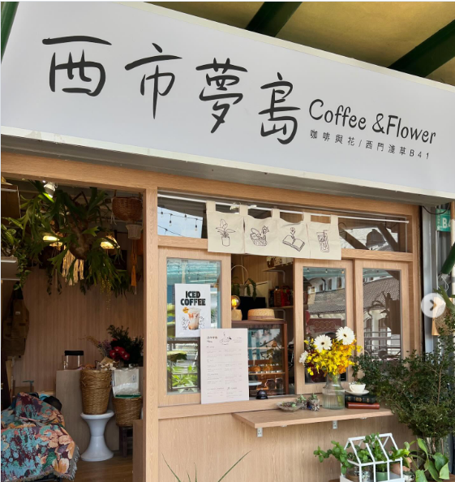
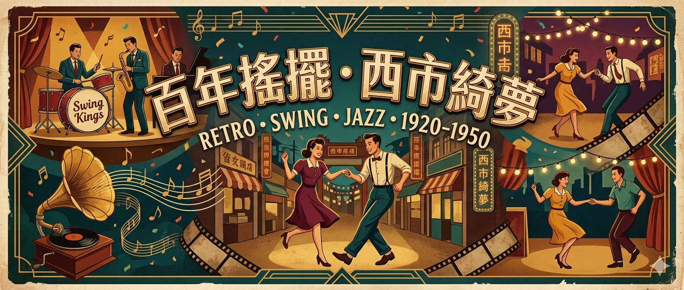

一、 活動概述
適逢台南運河百年，本活動將 1920 年代的復古搖擺舞（Swing Dance）文化，帶入見證台南百年繁華的「西市場香蕉倉庫」。透過現場大樂團的爵士樂、沈浸式的室內復古市集、以及充滿時代感的視覺設計，打造一場絕無僅有的午後復古搖擺舞會。
- 🗓 活動日期： 2026 年 11 月某週六（待定）
- ⏰ 活動時間： 18:00 - 22:00（4 小時）
- 📍 活動地點： 台南西市場 - 香蕉倉庫
- 🎩 活動主題： 百年運河・復古搖擺 (Dress Code：1920-30年代經典裝扮)

二、 核心主辦與合作單位

主辦單位｜思慕搖擺 (SMOO Dance)
深耕台南的搖擺舞（Lindy Hop）推廣品牌。致力於營造歡樂、具感染力的雙人舞社群。透過系統化的教學與充滿熱情的 Social 舞會，讓搖擺舞成為台南人日常的質感娛樂。

音樂演出｜狗屎運大樂團 (KoSwing Big Band)
台南在地首屈一指的爵士大樂團。編制完整、爆發力十足，專注於重現 1930 年代搖擺黃金時期的經典聲響，將為本次舞會注入最純粹、震撼的靈魂節奏。

市集策劃｜西市夢島
以質感選物與創意餐飲聞名的市集品牌。本次將把精緻的微型市集搬入香蕉倉庫內，引進酒水與點心，為舞客提供跳舞之餘的能量補給與質感社交體驗。
場地協力｜台南西市場 (香蕉倉庫)
擁有百年歷史的市定古蹟。挑高的木造屋頂桁架與通透的空間感，不僅見證了台南庶民經濟的繁榮，更是目前台南最具質感與歷史氛圍的展演空間。
三、 活動亮點與空間規劃

🎷 百年古蹟 x 現場大樂團
打破一般播放音樂的形式，邀請 KoSwing 以震撼銅管音色，在挑高古蹟中重現咆哮二零年代。

🍻 倉庫內的微醺復古市集
規劃精緻攤位，引進精釀啤酒、手作零食與雞蛋糕，讓舞客享受「邊吃邊喝邊搖擺」的愜意午後。

📸 沈浸式復古拍照區
結合現代溫暖氛圍與復古元素的「主題拍照看板」，搭配香蕉倉庫絕美的斜陽，打造社群打卡點。
四、 活動流程 (18:00 - 22:00)
經典流暢版
Combo 90分
節奏最舒適的 Social Night，有充裕時間享受市集與交流。
- 18:00 【夜幕時光】 報到進場、市集開放 / DJ 暖場
- 18:30 【盛大開場】 SMOO Dance 開場排舞
- 18:40 【自由搖擺】 DJ 播放經典搖擺名曲
- 19:25 【搖擺啟程】 🎵 Combo 樂團 Set 1 (45m)
- 20:10 【微醺交流】 DJ 串場 / Jam Circle 圍圈尬舞 / Dress Code 票選 / 市集補給
- 20:40 【夜色迴聲】 🎵 Combo 樂團 Set 2 (45m)
- 21:25 【搖擺到底】 DJ 接力經典搖擺名曲
- 21:40 【最佳穿搭】 Dress Code 票選頒獎
- 21:50 【完美句點】 全場大合照 / 散場
5視覺行銷與售票

- 視覺設計：以 1920–1950 年代復古插畫為主視覺，融合大樂團爵士樂手、留聲機、膠卷、霓虹燈與西市場街景，再點綴搖擺舞者剪影與「西市綺夢」直書招牌，營造跨越百年的爵士夜晚氛圍。色調以墨綠、鉻黃、酒紅交織，呈現 Art Deco 復古海報的時代質感。
- 數位體驗：建置專屬活動 Landing Page 與獨立報名系統。提供早鳥票、雙人套票及純聽歌觀賞票，最大化受眾基數。
6預算評估項目
- 🎵 音樂與表演： 狗屎運大樂團演出費、樂手保險、餐水與休息區佈置。
- 🎛 硬體與工程： 針對古蹟硬質地板之專業音響/PA收音、樂團舞台租借、照明點綴與通風設備。
- 🏛 場地與市集： 香蕉倉庫租金與保證金、公共意外險、室內攤位供電。
- 💻 行銷與視覺： 主視覺與拍照看板輸出、網頁伺服器/報名系統維護、社群廣告投放。
- 📸 影像與紀錄： 專業活動平面攝影、動態錄影（包含開場表演、活動精華與後續宣傳素材剪輯）。